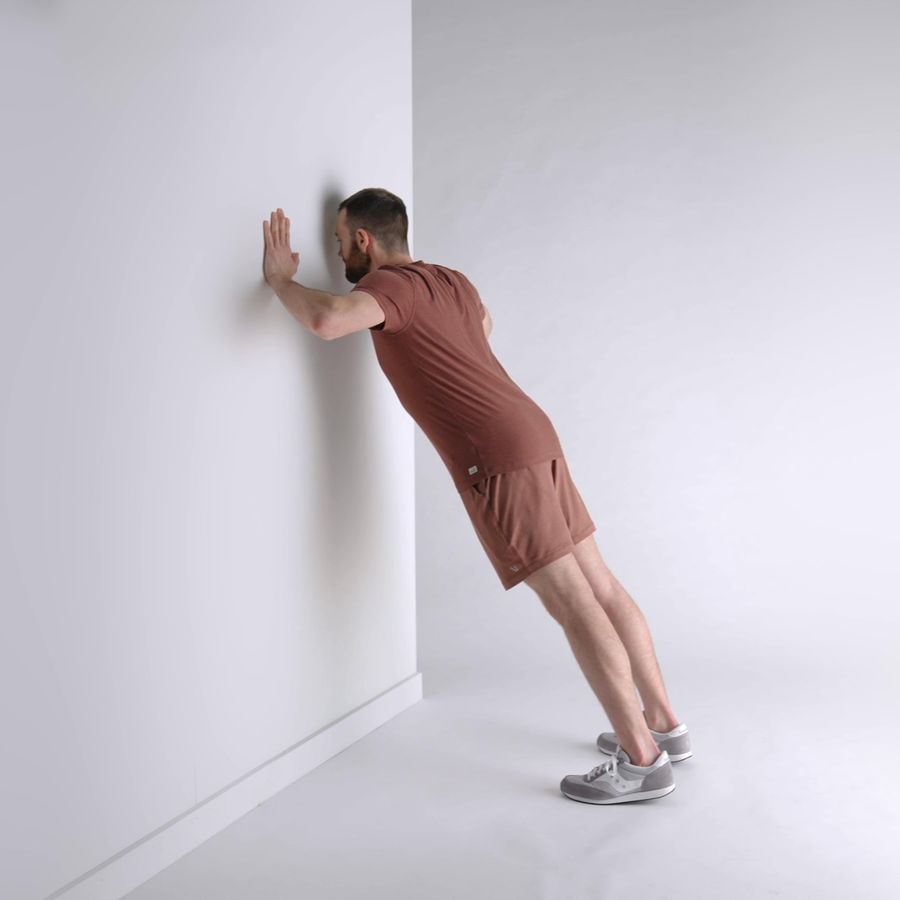
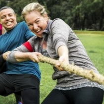
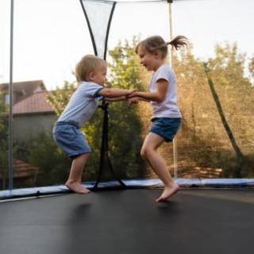

What is Heavy Work?
In occupational therapy, "heavy work" refers to body movements that engage larger muscles for the purpose of providing sensory input. You will often hear occupational therapists speak of "proprioception"; propripcetion is when the body uses signals from muscular pressure and resistance to create a greater sense of body awareness in space. Heavy work provides proprioception which can help with gross motor coordination and calming.
Click On Each Exercise!

Face wall, arms-length away. Place hands on wall, shoulder length apart. Bend elbows and lean into wall. Slowly push back until arms are straightened.

Grab a rope or a blanket and you and your child/another child pull in opposite directions to see who can pull the rope the furthest.

Trampolines provide intense proprioceptive input by stimulating muscles and joints through jumping
One of the simplest ways to promote proprioceptive input is by having your child carry a manageable stack of books. You can make it an aobstacle course, adding another book each time!
About Me

My name is Chris Sult. I am a licensed Occupational Therapy Assitant in Wilmington, NC with my wife Solveig and our two daughters, Ari and Cory. I have worked primarily in pediatrics for the past 6 years but ahve also done some geriatric PRN work in Assisted Living Facilities.